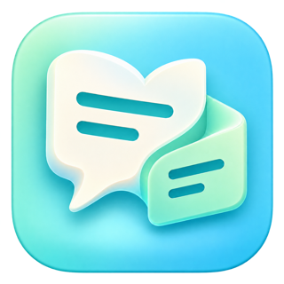

悬浮双语字幕
按需显示原文、译文或两者。播放视频时，可以把字幕放在播放器附近。

文译 WenyiApple Silicon · macOS 14+ · 支持 macOS 27
看外语视频、听播客或开会时，把系统声音或麦克风转成字幕。原文和译文可以悬浮显示，也可以保存下来回看。
この曲ができた瞬間、
風が吹いたような気がしました。
这首歌完成的那一刻，
仿佛有一阵风吹了过来。
按需显示原文、译文或两者。播放视频时，可以把字幕放在播放器附近。
在应用里下载 Nemotron 或 Qwen3-ASR。翻译可使用同一台 Mac 上的 LM Studio，也可选择仅发送字幕文字的 Index 在线翻译。
开启保存后，可将原文和译文保存为文本文件。之后可以在文译里回看、编辑和重命名。